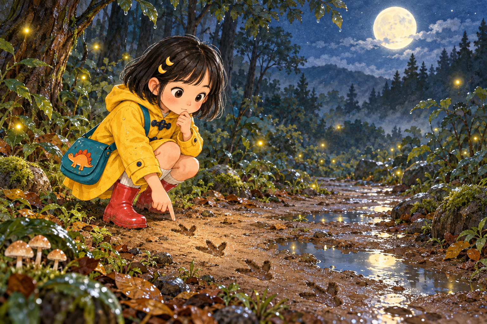
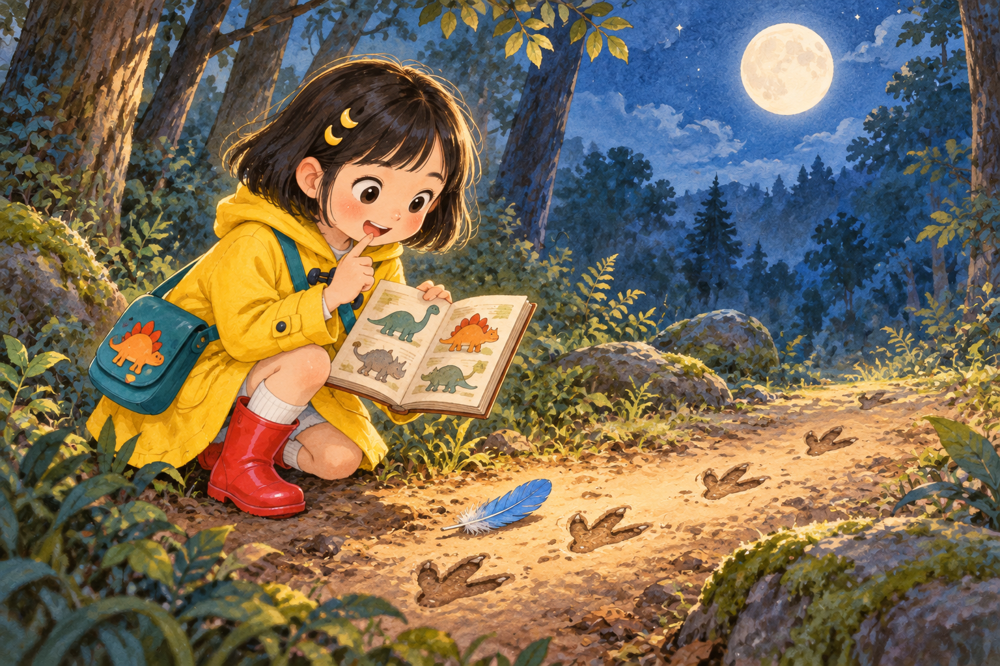
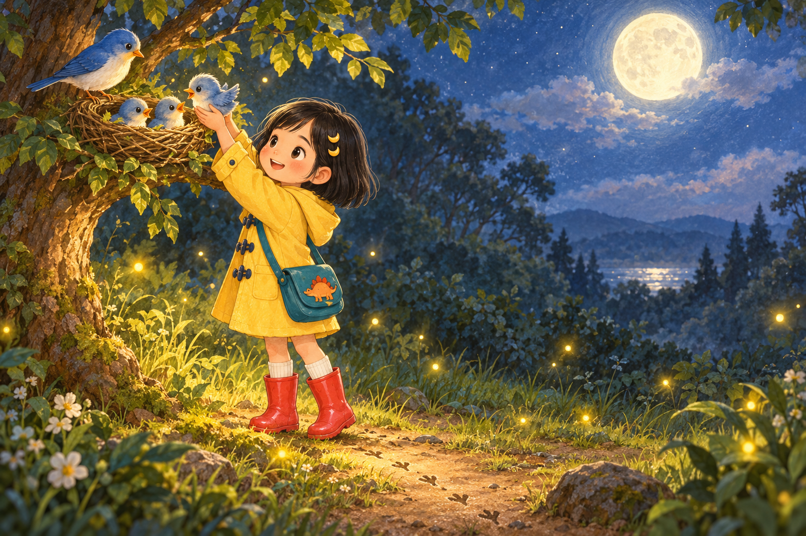
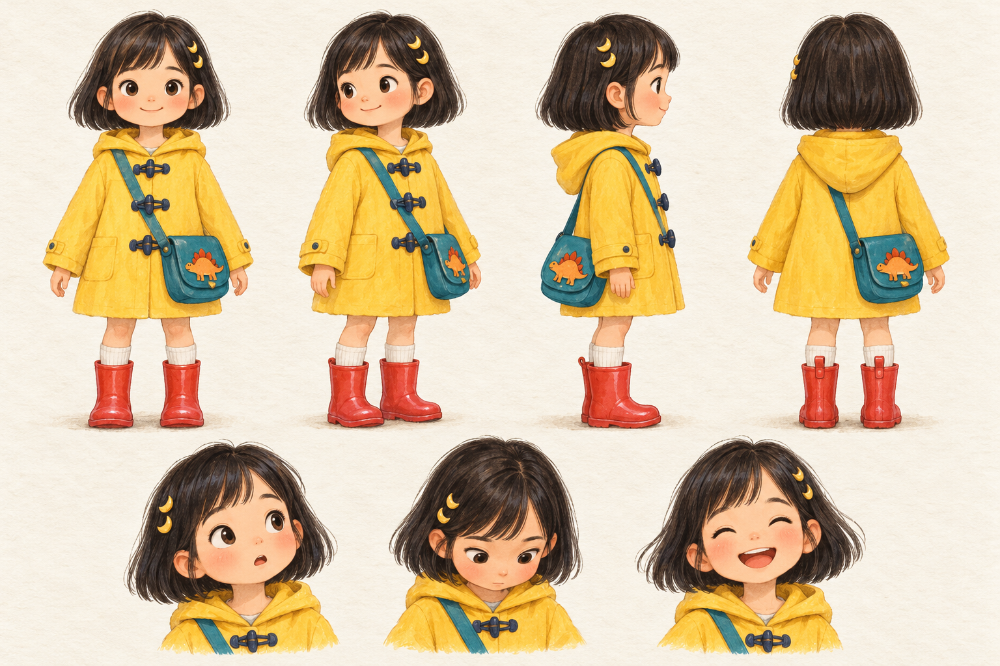

A MOONLIT STORY
小雨和
月光脚印
一个关于观察、知识和真正勇气的故事
点击“下一页”开始阅读
课程作品 作业2 · AI绘本

A MOONLIT STORY
一个关于观察、知识和真正勇气的故事
点击“下一页”开始阅读
第一幕 · 好奇
雨停以后，小雨提着勇气走进月光森林。泥地上，一串小小的三趾脚印绕过蘑菇，伸向树影深处。
喜欢恐龙的她蹲下来仔细观察，没有急着把它们当成怪兽的脚印。
“先看清楚，再下结论。”

第二幕 · 思考
小雨翻开随身带着的恐龙图鉴，比了比脚印的大小。真正的大恐龙可不会留下这么轻巧的痕迹。
就在这时，她发现脚印旁躺着一片蓝色羽毛，心里忽然有了答案。
“也许，它们不是怪兽的脚印。”

第三幕 · 温暖
她沿着脚印找到三只迷路的蓝色小鸟，又轻轻把它们送回低树枝上的鸟巢。
鸟妈妈唱起安心的歌，萤火虫也亮成了一条回家的路。小雨明白，真正的勇敢，是看清以后仍愿意伸出手。
THE LITTLE LIGHT
勇气不是贸然向前，
而是在认真观察后，
依然愿意采取行动、帮助别人。
— 完 —
BEHIND THE STORY
固定设定图 + 每幕重复角色锁定词 + 同一绘画风格
